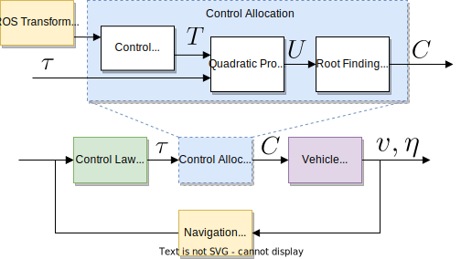

MVP - Low Level Controller
This repository contains low-level controller for marine vehicles.
Overview
mvp_control is the low level vehicle controller of the MVP framework.
It uses control allocation matrix with quadratic programming optimization.
It highly relies on ROS and ROS transform tree.

Documentation
The documentation for mvp_control package is is at https://uri-ocean-robotics.github.io/mvp_control.
Installation
Pull the mvp_msgs repository if you don’t have it already
git clone https://github.com/GSO-soslab/mvp_mission
Pull the repository
git clone https://github.com/GSO-soslab/mvp_control
Install dependencies
rosdep install --from-paths src --ignore-src --rosdistro ${ROS_DISTRO} -y
Compile using catkin_make.
Citation
If you find this software useful in your research, please cite:
Note, this work is published in OCEANS 2022 conference. Once the paper is publicly available, bibtex entry will be updated with the one from IEEExplore.
@inproceedings{mvp_paper,
title = {Working towards the development of a generic marine vehicle framework: ROS-MVP},
author={Gezer, Emir Cem and Zhou, Mingxi and Zhao, Lin and McConnell, William},
journal = {OCEANS 2022, Hampton Road},
year ={2022},
}
Funding
This work is supported by the National Science Foundation award #2154901